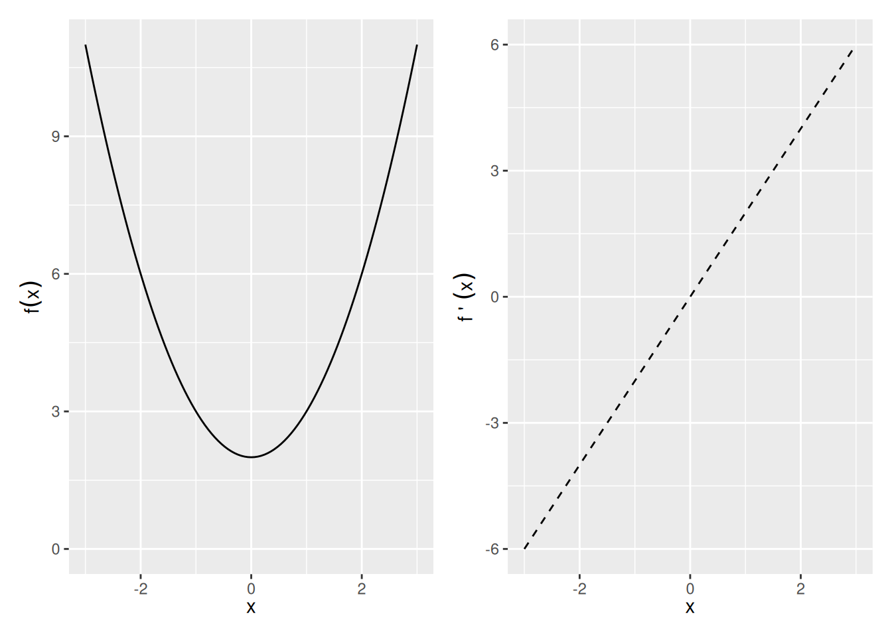
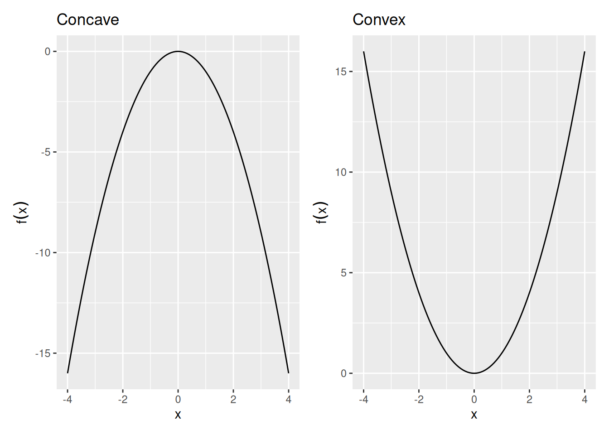

4 Optimization
To optimize, we use derivatives and calculus. Optimization is to find the maximum or minimum of a functon, and to find what value of an input gives that extremum. This has obvious uses in engineering. Many tools in the statistical toolkit use optimization. One of the most common ways of estimating a model is through “Maximum Likelihood Estimation”, done via optimizing a function (the likelihood).
Optimization also comes up in Economics, Formal Theory, and Political Economy all the time. A go-to model of human behavior is that they optimize a certain utility function. Humans are not pure utility maximizers, of course, but nuanced models of optimization – for example, adding constraints and adding uncertainty – will prove to be quite useful.
Example: Meltzer-Richard
A standard backdrop in comparative political economy, the Meltzer-Richard (1981) model states that redistribution of wealth should be higher in societies where the median income is much smaller than the average income. More to the point, typically income distributions wher ethe median is very different from the average is one of high inequality. In other words, the Meltzer-Richard model says that highly unequal economies will have more re-distribution of wealth. Why is that the case? Here is a simplified example that is not the exact model by Meltzer and Richard1, but adapted from Persson and Tabellini2
We will set the following things about our model human and model democracy.
- Individuals are indexed by \(i\), and the total population is normalized to unity (“1”) without loss of generality.
- \(U(\cdot)\), u for “utility”, is a function that is concave and increasing, and expresses the utility gained from public goods. This tells us that its first derivative is positive, and its second derivative is negative.
- \(y_i\) is the income of person \(i\)
- \(W_i\), w for “welfare”, is the welfare of person \(i\)
- \(c_i\), c for “consumption”, is the consumption utility of person \(i\)
Also, the government is democratically elected and sets the following redistribution output:
- \(\tau\), t for “tax”, is a flat tax rate between 0 and 1 that is applied to everyone’s income.
- \(g\), “g” for “goods”, is the amount of public goods that the government provides.
Suppose an individual’s welfare is given by: \[W_i = c_i + U(g)\]
The consumption good is the person’s post-tax income.
\[c_i = (1 - \tau) y_i\]
Income varies by person (In the next section we will cover probability, by then we will know that we can express this by saying that \(y\) is a random variable with the cumulative distribution function \(F\), i.e. \(y \sim F\).). Every distribution has a mean and an median.
- \(E(y)\) is the average income of the society.
- \(\text{med}(y)\) is the median income of the society.
What will happen in this economy? What will the tax rate be set too? How much public goods will be provided?
We’ve skipped ahead of some formal theory results of demoracy, but hopefully these are conceptually intuitive. First, if a democracy is competitive, there is no slack in the government’s goods, and all tax revenue becomes a public good. So we can go ahead and set the constraint:
\[g = \sum_{i} \tau y_i P(y_i) = \tau E(y)\]
We can do this trick because of the “normalizes to unity” setting, but this is a general property of the average.
Now given this constraint we can re-write an individual’s welfare as
\[\begin{align*} W_i &= \left(1 - \frac{g}{E(y)}\right)y_i + U(g)\\ &= \left(E(y) - g\right) \frac{1}{E(y)} y_i + U(g)\\ &= \left(E(y) - g\right) \frac{y_i}{E(y)} + U(g)\\ \end{align*}\]When is the individual’s welfare maximized, as a function of the public good? \[\begin{align*} \frac{d}{dg}W_i &= - \frac{y_i}{E(y)} + \frac{d}{dg}U(g)\\ \end{align*}\]
\(\frac{d}{dg}W_i = 0\) when \(\frac{d}{dg}U(g) = \frac{y_i}{E(y)}\), and so after expressing the derivative as \(U_g = \frac{d}{dg}U(g)\) for simplicity,
\[g_i^\star = {U_g}^{-1}\left(\frac{y_i}{E(y)}\right)\]
Now recall that because we assumed concavity, \(U_g\) is a negative sloping function whose value is positive. It can be shown that the inverse of such a function is also decreasing. Thus an individual’s preferred level of government is determined by a single continuum, the person’s income divided by the average income, and the function is decreasing in \(y_i\). This is consistent with our intuition that richer people prefer less redistribution.
That was the amount for any given person. The government has to set one value of \(g\), however. So what will that be? Now we will use another result, the median voter theorem. This says that under certain general electoral conditions (single-peaked preferences, two parties, majority rule), the policy winner will be that preferred by the median person in the population. Because the only thing that determines a person’s preferred level of government is \(y_i / E(y)\), we can presume that the median voter, whose income is \(\text{med}(y)\) will prevail in their preferred choice of government. Therefore, we will see
\[g^\star = {U_g}^{-1}\left(\frac{\text{med}(y)}{E(y)}\right)\]
What does this say about the level of redistribution we observe in an economy? The higher the average income is than the median income, which often (but not always) means more inequality, there should be more redistribution.
4.1 Maxima and Minima
The first derivative, \(f'(x)\), quantifies the slope of a function. Therefore, it can be used to check whether the function \(f(x)\) at the point \(x\) is increasing or decreasing at \(x\).
- Increasing: \(f'(x)>0\)
- Decreasing: \(f'(x)<0\)
- Neither increasing nor decreasing: \(f'(x)=0\) i.e. a maximum, minimum, or saddle point
So for example, \(f(x) = x^2 + 2\) and \(f^\prime(x) = 2x\)
Exercise 4.1 (Plotting a maximum and minimum) Plot \(f(x)=x^3+ x^2 + 2\), plot its derivative, and identify where the derivative is zero. Is there a maximum or minimum?
The second derivative \(f''(x)\) identifies whether the function \(f(x)\) at the point \(x\) is
- Concave down: \(f''(x)<0\)
- Concave up: \(f''(x)>0\)
Maximum (Minimum): \(x_0\) is a local maximum (minimum) if \(f(x_0)>f(x)\) (\(f(x_0)<f(x))\) for all \(x\) within some open interval containing \(x_0\). \(x_0\) is a global maximum (minimum) if \(f(x_0)>f(x)\) (\(f(x_0)<f(x))\) for all \(x\) in the domain of \(f\).
Given the function \(f\) defined over domain \(D\), all of the following are defined as critical points:
- Any interior point of \(D\) where \(f'(x)=0\).
- Any interior point of \(D\) where \(f'(x)\) does not exist.
- Any endpoint that is in \(D\).
The maxima and minima will be a subset of the critical points.
Second Derivative Test of Maxima/Minima: We can use the second derivative to tell us whether a point is a maximum or minimum of \(f(x)\).
- Local Maximum: \(f'(x)=0\) and \(f''(x)<0\)
- Local Minimum: \(f'(x)=0\) and \(f''(x)>0\)
- Need more info: \(f'(x)=0\) and \(f''(x)=0\)
Global Maxima and Minima Sometimes no global max or min exists — e.g., \(f(x)\) not bounded above or below. However, there are three situations where we can fairly easily identify global max or min.
- Functions with only one critical point. If \(x_0\) is a local max or min of \(f\) and it is the only critical point, then it is the global max or min.
- Globally concave up or concave down functions. If \(f''(x)\) is never zero, then there is at most one critical point. That critical point is a global maximum if \(f''<0\) and a global minimum if \(f''>0\).
- Functions over closed and bounded intervals must have both a global maximum and a global minimum.
Example 4.1 (Maxima and Minima by drawing) Find any critical points and identify whether they are a max, min, or saddle point:
- \(f(x)=x^2+2\)
- \(f(x)=x^3+2\)
- \(f(x)=|x^2-1|\), \(x\in [-2,2]\)
4.2 Concavity of a Function
Concavity helps identify the curvature of a function, \(f(x)\), in 2 dimensional space.
Definition 4.1 (Concave Function) A function \(f\) is strictly concave over the set S \(\forall x_1,x_2 \in S\) and \(\forall a \in (0,1)\), \[f(ax_1 + (1-a)x_2) > af(x_1) + (1-a)f(x_2)\] line connecting two points on a concave function will lie the function.
Warning: Using `size` aesthetic for lines was deprecated in ggplot2 3.4.0.
ℹ Please use `linewidth` instead.
Definition 4.2 (Convex Function) Convex: A function f is strictly convex over the set S \(\forall x_1,x_2 \in S\) and \(\forall a \in (0,1)\), \[f(ax_1 + (1-a)x_2) < af(x_1) + (1-a)f(x_2)\]
Any line connecting two points on a convex function will lie above the function.
Sometimes, concavity and convexity are strict of a requirement. For most purposes of getting solutions, what we call quasi-concavity is enough.
Definition 4.3 (Quasiconcave Function) A function f is quasiconcave over the set S if \(\forall x_1,x_2 \in S\) and \(\forall a \in (0,1)\), \[f(ax_1 + (1-a)x_2) \ge \min(f(x_1),f(x_2))\]
No matter what two points you select, the valued point will always be an end point.
Definition 4.4 (Quasiconvex) A function f is quasiconvex over the set \(S\) if \(\forall x_1,x_2 \in S\) and \(\forall a \in (0,1)\), \[f(ax_1 + (1-a)x_2) \le \max(f(x_1),f(x_2))\] No matter what two points you select, the valued point will always be an end point.
Second Derivative Test of Concavity: The second derivative can be used to understand concavity.
If \[\begin{array}{lll} f''(x) < 0 & \Rightarrow & \text{Concave}\\ f''(x) > 0 & \Rightarrow & \text{Convex} \end{array}\]
Quadratic Forms
Quadratic forms is shorthand for a way to summarize a function. This is important for finding concavity because
- Approximates local curvature around a point — e.g., used to identify max vs min vs saddle point.
- They are simple to express even in \(n\) dimensions:
- Have a matrix representation.
Quadratic Form: A polynomial where each term is a monomial of degree 2 in any number of variables:
\[\begin{align*} \text{One variable: }& Q(x_1) = a_{11}x_1^2\\ \text{Two variables: }& Q(x_1,x_2) = a_{11}x_1^2 + a_{12}x_1x_2 + a_{22}x_2^2\\ \text{N variables: }& Q(x_1,\cdots,x_n)=\sum\limits_{i\le j} a_{ij}x_i x_j \end{align*}\]which can be written in matrix terms:
One variable
\[Q(\mathbf{x}) = x_1^\top a_{11} x_1\]
N variables: \[\begin{align*} Q(\mathbf{x}) &=\begin{pmatrix} x_1 & x_2 & \cdots & x_n \end{pmatrix}\begin{pmatrix} a_{11}&\frac{1}{2}a_{12}&\cdots&\frac{1}{2}a_{1n}\\ \frac{1}{2}a_{12}&a_{22}&\cdots&\frac{1}{2}a_{2n}\\ \vdots&\vdots&\ddots&\vdots\\ \frac{1}{2}a_{1n}&\frac{1}{2}a_{2n}&\cdots&a_{nn} \end{pmatrix} \begin{pmatrix} x_1\\x_2\\\vdots\\x_n\end{pmatrix}\\ &= \mathbf{x}^\top\mathbf{Ax} \end{align*}\]
For example, the Quadratic on \(\mathbf{R}^2\): \[\begin{align*} Q(x_1,x_2)&=\begin{pmatrix} x_1& x_2 \end{pmatrix} \begin{pmatrix} a_{11}&\frac{1}{2} a_{12}\\ \frac{1}{2}a_{12}&a_{22}\end{pmatrix} \begin{pmatrix} x_1\\x_2 \end{pmatrix} \\ &= a_{11}x_1^2 + a_{12}x_1x_2 + a_{22}x_2^2 \end{align*}\]
Definiteness of Quadratic Forms
When the function \(f(\mathbf{x})\) has more than two inputs, determining whether it has a maxima and minima (remember, functions may have many inputs but they have only one output) is a bit more tedious. Definiteness helps identify the curvature of a function, \(Q(\textbf{x})\), in n dimensional space.
Definiteness: By definition, a quadratic form always takes on the value of zero when \(x = 0\), \(Q(\textbf{x})=0\) at \(\textbf{x}=0\). The definiteness of the matrix \(\textbf{A}\) is determined by whether the quadratic form \(Q(\textbf{x})=\textbf{x}^\top\textbf{A}\textbf{x}\) is greater than zero, less than zero, or sometimes both over all \(\mathbf{x}\ne 0\).
4.3 FOC and SOC
We can see from a graphical representation that if a point is a local maxima or minima, it must meet certain conditions regarding its derivative. These are so commonly used that we refer these to “First Order Conditions” (FOCs) and “Second Order Conditions” (SOCs) in the economic tradition.
First Order Conditions
When we examined functions of one variable \(x\), we found critical points by taking the first derivative, setting it to zero, and solving for \(x\). For functions of \(n\) variables, the critical points are found in much the same way, except now we set the partial derivatives equal to zero. Note: We will only consider critical points on the interior of a function’s domain.
In a derivative, we only took the derivative with respect to one variable at a time. When we take the derivative separately with respect to all variables in the elements of \(\mathbf{x}\) and then express the result as a vector, we use the term Gradient and Hessian.
Definition 4.5 (Gradient) Given a function \(f(\textbf{x})\) in \(n\) variables, the gradient \(\nabla f(\mathbf{x})\) (the greek letter nabla ) is a column vector, where the \(i\)th element is the partial derivative of \(f(\textbf{x})\) with respect to \(x_i\):
\[\nabla f(\mathbf{x}) = \begin{pmatrix} \frac{\partial f(\mathbf{x})}{\partial x_1}\\ \frac{\partial f(\mathbf{x})}{\partial x_2}\\ \vdots \\ \frac{\partial f(\mathbf{x})}{\partial x_n} \end{pmatrix}\]
Before we know whether a point is a maxima or minima, if it meets the FOC it is a “Critical Point”.
Definition 4.6 (Critical Point) \(\mathbf{x}^*\) is a critical point if and only if \(\nabla f(\mathbf{x}^*)=0\). If the partial derivative of f(x) with respect to \(x^*\) is 0, then \(\mathbf{x}^*\) is a critical point. To solve for \(\mathbf{x}^*\), find the gradient, set each element equal to 0, and solve the system of equations. \[\mathbf{x}^* = \begin{pmatrix} x_1^*\\x_2^*\\ \vdots \\ x_n^*\end{pmatrix}\]
Example 4.2 Example: Given a function \(f(\mathbf{x})=(x_1-1)^2+x_2^2+1\), find the (1) Gradient and (2) Critical point of \(f(\mathbf{x})\).
Solution 4.1. Gradient
\[\begin{align*} \nabla f(\mathbf{x}) &= \begin{pmatrix}\frac{\partial f(\mathbf{x})}{\partial x_1}\\ \frac{\partial f(\mathbf{x})}{\partial x_2} \end{pmatrix}\\ &= \begin{pmatrix} 2(x_1-1)\\ 2x_2 \end{pmatrix} \end{align*}\]Critical Point \(\mathbf{x}^* =\)
\[\begin{align*} &\frac{\partial f(\mathbf{x})}{\partial x_1} = 2(x_1-1) = 0\\ &\Rightarrow x_1^* = 1\\ &\frac{\partial f(\mathbf{x})}{\partial x_2} = 2x_2 = 0\\ &\Rightarrow x_2^* = 0\\ \end{align*}\]So \[\mathbf{x}^* = (1,0)\]
Second Order Conditions
When we found a critical point for a function of one variable, we used the second derivative as a indicator of the curvature at the point in order to determine whether the point was a min, max, or saddle (second derivative test of concavity). For functions of \(n\) variables, we use second order partial derivatives as an indicator of curvature.
Definition 4.7 (Hessian) Given a function \(f(\mathbf{x})\) in \(n\) variables, the hessian \(\mathbf{H(x)}\) is an \(n\times n\) matrix, where the \((i,j)\)th element is the second order partial derivative of \(f(\mathbf{x})\) with respect to \(x_i\) and \(x_j\):
\[\mathbf{H(x)}=\begin{pmatrix} \frac{\partial^2 f(\mathbf{x})}{\partial x_1^2}&\frac{\partial^2f(\mathbf{x})}{\partial x_1 \partial x_2}& \cdots & \frac{\partial^2 f(\mathbf{x})}{\partial x_1 \partial x_n} \\ \frac{\partial^2 f(\mathbf{x})}{\partial x_2 \partial x_1}&\frac{\partial^2f(\mathbf{x})}{\partial x_2^2}& \cdots & \frac{\partial^2 f(\mathbf{x})}{\partial x_2 \partial x_n}\\ \vdots & \vdots & \ddots & \vdots \\ \frac{\partial^2 f(\mathbf{x})}{\partial x_n \partial x_1}&\frac{\partial^2f(\mathbf{x})}{\partial x_n \partial x_2}& \cdots & \frac{\partial^2 f(\mathbf{x})}{\partial x_n^2}\end{pmatrix}\]
Note that the hessian will be a symmetric matrix because \(\frac{\partial f(\mathbf{x})}{\partial x_1\partial x_2} = \frac{\partial f(\mathbf{x})}{\partial x_2\partial x_1}\).
Also note that given that \(f(\mathbf{x})\) is of quadratic form, each element of the hessian will be a constant.
These definitions will be employed when we determine the Second Order Conditions of a function:
Given a function \(f(\mathbf{x})\) and a point \(\mathbf{x}^*\) such that \(\nabla f(\mathbf{x}^*)=0\),
- Hessian is Positive Definite \(\quad \Longrightarrow \quad\) Strict Local Min
- Hessian is Positive Semidefinite \(\forall \mathbf{x}\in B(\mathbf{x}^*,\epsilon)\)} \(\quad \Longrightarrow \quad\) Local Min
- Hessian is Negative Definite \(\quad \Longrightarrow \quad\) Strict Local Max
- Hessian is Negative Semidefinite \(\forall \mathbf{x}\in B(\mathbf{x}^*,\epsilon)\)} \(\quad \Longrightarrow \quad\) Local Max
- Hessian is Indefinite \(\quad \Longrightarrow \quad\) Saddle Point
Example 4.3 (Max and min with two dimensions) We found that the only critical point of \(f(\mathbf{x})=(x_1-1)^2+x_2^2+1\) is at \(\mathbf{x}^*=(1,0)\). Is it a min, max, or saddle point?
Solution 4.2. The Hessian is \[\begin{align*} \mathbf{H(x)} &= \begin{pmatrix} 2&0\\0&2 \end{pmatrix} \end{align*}\] The Leading principal minors of the Hessian are \(M_1=2; M_2=4\). Now we consider Definiteness. Since both leading principal minors are positive, the Hessian is positive definite.
Maxima, Minima, or Saddle Point? Since the Hessian is positive definite and the gradient equals 0, \(x^\star = (1,0)\) is a strict local minimum.
Note: Alternate check of definiteness. Is \(\mathbf{H(x^*)} \geq \leq 0 \quad \forall \quad \mathbf{x}\ne 0\)
\[\begin{align*} \mathbf{x}^\top H(\mathbf{x}^*) \mathbf{x} &= \begin{pmatrix} x_1 & x_2 \end{pmatrix}\\ &= \begin{pmatrix} 2&0\\0&2 \end{pmatrix}\\ \begin{pmatrix} x_1\\x_2\end{pmatrix} &= 2x_1^2+2x_2^2 \end{align*}\]For any \(\mathbf{x}\ne 0\), \(2(x_1^2+x_2^2)>0\), so the Hessian is positive definite and \(\mathbf{x}^*\) is a strict local minimum.
Definiteness and Concavity
Although definiteness helps us to understand the curvature of an n-dimensional function, it does not necessarily tell us whether the function is globally concave or convex.
We need to know whether a function is globally concave or convex to determine whether a critical point is a global min or max. We can use the definiteness of the Hessian to determine whether a function is globally concave or convex:
- Hessian is Positive Semidefinite \(\forall \mathbf{x}\)} \(\quad \Longrightarrow \quad\) Globally Convex
- Hessian is Negative Semidefinite \(\forall \mathbf{x}\)} \(\quad \Longrightarrow \quad\) Globally Concave
Notice that the definiteness conditions must be satisfied over the entire domain.
4.4 Global Maxima and Minima
Global Max/Min Conditions: Given a function \(f(\mathbf{x})\) and a point \(\mathbf{x}^*\) such that \(\nabla f(\mathbf{x}^*)=0\),
Note that showing that \(\mathbf{H(x^*)}\) is negative semidefinite is not enough to guarantee \(\mathbf{x}^*\) is a local max. However, showing that \(\mathbf{H(x)}\) is negative semidefinite for all \(\mathbf{x}\) guarantees that \(x^*\) is a global max. (The same goes for positive semidefinite and minima.)\
Example: Take \(f_1(x)=x^4\) and \(f_2(x)=-x^4\). Both have \(x=0\) as a critical point. Unfortunately, \(f''_1(0)=0\) and \(f''_2(0)=0\), so we can’t tell whether \(x=0\) is a min or max for either. However, \(f''_1(x)=12x^2\) and \(f''_2(x)=-12x^2\). For all \(x\), \(f''_1(x)\ge 0\) and \(f''_2(x)\le 0\) — i.e., \(f_1(x)\) is globally convex and \(f_2(x)\) is globally concave. So \(x=0\) is a global min of \(f_1(x)\) and a global max of \(f_2(x)\).
Exercise 4.2 Given \(f(\mathbf{x})=x_1^3-x_2^3+9x_1x_2\), find any maxima or minima.
4.5 Constrained Optimization
We have already looked at optimizing a function in one or more dimensions over the whole domain of the function. Often, however, we want to find the maximum or minimum of a function over some restricted part of its domain.
ex: Maximizing utility subject to a budget constraint

Types of Constraints: For a function \(f(x_1, \dots, x_n)\), there are two types of constraints that can be imposed:
In any constrained optimization problem, the constrained maximum will always be less than or equal to the unconstrained maximum. If the constrained maximum is less than the unconstrained maximum, then the constraint is binding. Essentially, this means that you can treat your constraint as an equality constraint rather than an inequality constraint.
For example, the budget constraint binds when you spend your entire budget. This generally happens because we believe that utility is strictly increasing in consumption, i.e. you always want more so you spend everything you have.
Any number of constraints can be placed on an optimization problem. When working with multiple constraints, always make sure that the set of constraints are not pathological; it must be possible for all of the constraints to be satisfied simultaneously.
\[\max_{x_1,x_2} f(x_1,x_2) \text{ s.t. } c(x_1,x_2)\] \[\min_{x_1,x_2} f(x_1,x_2) \text{ s.t. } c(x_1,x_2)\]
This tells us to maximize/minimize our function, \(f(x_1,x_2)\), with respect to the choice variables, \(x_1,x_2\), subject to the constraint.
Example:
\[\max_{x_1,x_2} f(x_1, x_2) = -(x_1^2 + 2x_2^2) \text{ s.t. }x_1 + x_2 = 4\]
It is easy to see that the maximum occurs at \((x_1, x_2) = (0,0)\), but that does not satisfy the constraint. How should we proceed?
Equality Constraints
Equality constraints are the easiest to deal with because we know that the maximum or minimum has to lie on the (intersection of the) constraint(s).
The trick is to change the problem from a constrained optimization problem in \(n\) variables to an unconstrained optimization problem in \(n + k\) variables, adding one variable for each equality constraint. We do this using a lagrangian multiplier.
Lagrangian function: The Lagrangian function allows us to combine the function we want to optimize and the constraint function into a single function. Once we have this single function, we can proceed as if this were an unconstrained optimization problem.
For each constraint, we must include a Lagrange multiplier (\(\lambda_i\)) as an additional variable in the analysis. These terms are the link between the constraint and the Lagrangian function.
Given a two dimensional set-up: \[\max_{x_1,x_2}/\min_{x_1,x_2} f(x_1,x_2) \text{ s.t. } c(x_1,x_2) = a\]
We define the Lagrangian function \(L(x_1,x_2,\lambda_1)\) as follows: \[L(x_1,x_2,\lambda_1) = f(x_1,x_2) - \lambda_1 (c(x_1,x_2) - a)\]
More generally, in n dimensions: \[ L(x_1, \dots, x_n, \lambda_1, \dots, \lambda_k) = f(x_1, \dots, x_n) - \sum_{i=1}^k\lambda_i(c_i(x_1,\dots, x_n) - r_i)\]
Getting the sign right: Note that above we subtract the lagrangian term and we subtract the constraint constant from the constraint function. Occasionally, you may see the following alternative form of the Lagrangian, which is equivalent: \[ L(x_1, \dots, x_n, \lambda_1, \dots, \lambda_k) = f(x_1, \dots, x_n) + \sum_{i=1}^k\lambda_i(r_i - c_i(x_1,\dots, x_n))\] Here we add the lagrangian term and we subtract the constraining function from the constraint constant.
Using the Lagrangian to Find the Critical Points: To find the critical points, we take the partial derivatives of lagrangian function, \(L(x_1, \dots, x_n, \lambda_1, \dots, \lambda_k)\), with respect to each of its variables (all choice variables \(\mathbf{x}\) and all lagrangian multipliers \(\mathbf{\lambda}\)). At a critical point, each of these partial derivatives must be equal to zero, so we obtain a system of \(n + k\) equations in \(n + k\) unknowns:
\[\begin{align*} \frac{\partial L}{\partial x_1} &= \frac{\partial f}{\partial x_1} - \sum_{i = 1}^k\lambda_i\frac{\partial c_i}{\partial x_1} = 0\\ \vdots &= \vdots \nonumber \\ \frac{\partial L}{\partial x_n} &= \frac{\partial f}{\partial x_n} - \sum_{i = 1}^k\lambda_i\frac{\partial c_i}{\partial x_n} = 0\\ \frac{\partial L}{\partial \lambda_1} &= c_1(x_i, \dots, x_n) - r_1 = 0\\ \vdots &= \vdots \nonumber \\ \frac{\partial L}{\partial \lambda_k} &= c_k(x_i, \dots, x_n) - r_k = 0 \end{align*}\]We can then solve this system of equations, because there are \(n+k\) equations and \(n+k\) unknowns, to calculate the critical point \((x_1^*,\dots,x_n^*,\lambda_1^*,\dots,\lambda_k^*)\).
Second-order Conditions and Unconstrained Optimization: There may be more than one critical point, i.e. we need to verify that the critical point we find is a maximum/minimum. Similar to unconstrained optimization, we can do this by checking the second-order conditions.
Example 4.4 (Constrained optimization with two goods and a budget constraint) Find the constrained optimization of \[\max_{x_1,x_2} f(x) = -(x_1^2 + 2x_2^2) \text{ s.t. } x_1 + x_2 = 4\]
Solution 4.3.
- Begin by writing the Lagrangian: \[L(x_1, x_2, \lambda) = -(x_1^2 + 2x_2^2) - \lambda(x_1 + x_2 - 4)\]
- Take the partial derivatives and set equal to zero:
Solve the system of equations: Using the first two partials, we see that \(\lambda = -2x_1\) and \(\lambda = -4x_2\) Set these equal to see that \(x_1 = 2x_2\). Using the third partial and the above equality, \(4 = 2x_2 + x_2\) from which we get \[x_2^* = 4/3, x_1^* = 8/3, \lambda = -16/3\]
Therefore, the only critical point is \(x_1^* = \frac{8}{3}\) and \(x_2^* = \frac{4}{3}\)
This gives \(f(\frac{8}{3}, \frac{4}{3}) = -\frac{96}{9}\), which is less than the unconstrained optimum \(f(0,0) = 0\)
Notice that when we take the partial derivative of L with respect to the Lagrangian multiplier and set it equal to 0, we return exactly our constraint! This is why signs matter.
4.6 Inequality Constraints
Inequality constraints define the boundary of a region over which we seek to optimize the function. This makes inequality constraints more challenging because we do not know if the maximum/minimum lies along one of the constraints (the constraint binds) or in the interior of the region.
We must introduce more variables in order to turn the problem into an unconstrained optimization.
Slack: For each inequality constraint \(c_i(x_1, \dots, x_n) \leq a_i\), we define a slack variable \(s_i^2\) for which the expression \(c_i(x_1, \dots, x_n) \leq a_i - s_i^2\) would hold with equality. These slack variables capture how close the constraint comes to binding. We use \(s^2\) rather than \(s\) to ensure that the slack is positive.
Slack is just a way to transform our constraints.
Given a two-dimensional set-up and these edited constraints: \[\max_{x_1,x_2}/\min_{x_1,x_2} f(x_1,x_2) \text{ s.t. } c(x_1,x_2) \le a_1\]
Adding in Slack: \[\max_{x_1,x_2}/\min_{x_1,x_2} f(x_1,x_2) \text{ s.t. } c(x_1,x_2) \le a_1 - s_1^2\]
We define the Lagrangian function \(L(x_1,x_2,\lambda_1,s_1)\) as follows: \[L(x_1,x_2,\lambda_1,s_1) = f(x_1,x_2) - \lambda_1 ( c(x_1,x_2) + s_1^2 - a_1)\]
More generally, in n dimensions: \[ L(x_1, \dots, x_n, \lambda_1, \dots, \lambda_k, s_1, \dots, s_k) = f(x_1, \dots, x_n) - \sum_{i = 1}^k \lambda_i(c_i(x_1,\dots, x_n) + s_i^2 - a_i)\]
Finding the Critical Points: To find the critical points, we take the partial derivatives of the lagrangian function, \(L(x_1,\dots,x_n,\lambda_1,\dots,\lambda_k,s_1,\dots,s_k)\), with respect to each of its variables (all choice variables \(x\), all lagrangian multipliers \(\lambda\), and all slack variables \(s\)). At a critical point, each of these partial derivatives must be equal to zero, so we obtain a system of \(n + 2k\) equations in \(n + 2k\) unknowns:
\[\begin{align*} \frac{\partial L}{\partial x_1} &= \frac{\partial f}{\partial x_1} - \sum_{i = 1}^k\lambda_i\frac{\partial c_i}{\partial x_1} = 0\\ \vdots & = \vdots \\ \frac{\partial L}{\partial x_n} &= \frac{\partial f}{\partial x_n} - \sum_{i = 1}^k\lambda_i\frac{\partial c_i}{\partial x_n} = 0\\ \frac{\partial L}{\partial \lambda_1} &= c_1(x_i, \dots, x_n) + s_1^2 - b_1 = 0\\ \vdots & = \vdots \\ \frac{\partial L}{\partial \lambda_k} &= c_k(x_i, \dots, x_n) + s_k^2 - b_k = 0\\ \frac{\partial L}{\partial s_1} &= 2s_1\lambda_1 = 0\\ \vdots =\vdots \\ \frac{\partial L}{\partial s_k} &= 2s_k\lambda_k = 0 \end{align*}\]Complementary slackness conditions: The last set of first order conditions of the form \(2s_i\lambda_i = 0\) (the partials taken with respect to the slack variables) are known as complementary slackness conditions. These conditions can be satisfied one of three ways:
- \(\lambda_i = 0\) and \(s_i \neq 0\): This implies that the slack is positive and thus the constraint does not bind.
- \(\lambda_i \neq 0\) and \(s_i = 0\): This implies that there is no slack in the constraint and the constraint does bind.
- \(\lambda_i = 0\) and \(s_i = 0\): In this case, there is no slack but the constraint binds trivially, without changing the optimum.
Example: Find the critical points for the following constrained optimization:
\[\max_{x_1,x_2} f(x) = -(x_1^2 + 2x_2^2) \text{ s.t. } x_1 + x_2 \le 4\]
- Rewrite with the slack variables:
\[\max_{x_1,x_2} f(x) = -(x_1^2 + 2x_2^2) \text{ s.t. } x_1 + x_2 \le 4 - s_1^2\]
- Write the Lagrangian:
\[L(x_1,x_2,\lambda_1,s_1) = -(x_1^2 + 2x_2^2) - \lambda_1 (x_1 + x_2 + s_1^2 - 4)\]
- Take the partial derivatives and set equal to 0:
- Consider all ways that the complementary slackness conditions are solved:
This shows that there are two critical points: \((0,0)\) and \((\frac{8}{3},\frac{4}{3})\).
- Find maximum: Looking at the values of \(f(x_1,x_2)\) at the critical points, we see that \(f(x_1,x_2)\) is maximized at \(x_1^* = 0\) and \(x_2^*=0\).
Exercise 4.3 Example: Find the critical points for the following constrained optimization: \[\max_{x_1,x_2} f(x) = -(x_1^2 + 2x_2^2) \text{ s.t. } \begin{array}{l} x_1 + x_2 \le 4\\ x_1 \ge 0\\ x_2 \ge 0 \end{array}\]
- Rewrite with the slack variables:
- Write the Lagrangian:
\[L(x_1, x_2, \lambda_1, \lambda_2, \lambda_3, s_1, s_2, s_3) = -(x_1^2 + 2x_2^2) - \lambda_1(x_1 + x_2 + s_1^2 - 4) - \lambda_2(-x_1 + s_2^2) - \lambda_3(-x_2 + s_3^2)\] 3. Take the partial derivatives and set equal to zero:
\(\frac{\partial L}{\partial x_1} = -2x_1 - \lambda_1 + \lambda_2 = 0\)\ \(\frac{\partial L}{\partial x_2} = -4x_2 - \lambda_1 + \lambda_3 = 0\)\ \(\frac{\partial L}{\partial \lambda_1} = -(x_1 + x_2 + s_1^2 - 4) = 0\)\ \(\frac{\partial L}{\partial \lambda_2} = -(-x_1 + s_2^2) = 0\)\ \(\frac{\partial L}{\partial \lambda_3} = -(-x_2 + s_3^2) = 0\)\ \(\frac{\partial L}{\partial s_1} = 2s_1\lambda_1 = 0\)\ \(\frac{\partial L}{\partial s_2} = 2s_2\lambda_2 = 0\)\ \(\frac{\partial L}{\partial s_3} = 2s_3\lambda_3 = 0\)
- Consider all ways that the complementary slackness conditions are solved:
This shows that there are four critical points: \((0,0)\), \((4,0)\), \((0,4)\), and \((\frac{8}{3},\frac{4}{3})\)
- Find maximum: Looking at the values of \(f(x_1,x_2)\) at the critical points, we see that the constrained maximum is located at \((x_1, x_2) = (0,0)\), which is the same as the unconstrained max. The constrained minimum is located at \((x_1, x_2) = (0,4)\), while there is no unconstrained minimum for this problem.
4.7 Kuhn-Tucker Conditions
As you can see, this can be a pain. When dealing explicitly with non-negativity constraints, this process is simplified by using the Kuhn-Tucker method.
Because the problem of maximizing a function subject to inequality and non-negativity constraints arises frequently in economics, the Kuhn-Tucker conditions provides a method that often makes it easier to both calculate the critical points and identify points that are (local) maxima.
Given a two-dimensional set-up: \[\max_{x_1,x_2}/\min_{x_1,x_2} f(x_1,x_2) \text{ s.t. } \begin{array}{l} c(x_1,x_2) \le a_1\\ x_1 \ge 0 \\ gx_2 \ge 0 \end{array}\]
We define the Lagrangian function \(L(x_1,x_2,\lambda_1)\) the same as if we did not have the non-negativity constraints: \[L(x_1,x_2,\lambda_2) = f(x_1,x_2) - \lambda_1(c(x_1,x_2) - a_1)\]
More generally, in n dimensions: \[ L(x_1, \dots, x_n, \lambda_1, \dots, \lambda_k) = f(x_1, \dots, x_n) - \sum_{i=1}^k\lambda_i(c_i(x_1,\dots, x_n) - a_i)\]
Kuhn-Tucker and Complementary Slackness Conditions: To find the critical points, we first calculate the Kuhn-Tucker conditions by taking the partial derivatives of the lagrangian function, \(L(x_1,\dots,x_n,\lambda_1,\dots,\lambda_k)\), with respect to each of its variables (all choice variable s\(x\) and all lagrangian multipliers \(\lambda\)) and we calculate the complementary slackness conditions by multiplying each partial derivative by its respective variable and include non-negativity conditions for all variables (choice variables \(x\) and lagrangian multipliers \(\lambda\)).
Kuhn-Tucker Conditions
\[\begin{align*} \frac{\partial L}{\partial x_1} \leq 0, & \dots, \frac{\partial L}{\partial x_n} \leq 0\\ \frac{\partial L}{\partial \lambda_1} \geq 0, & \dots, \frac{\partial L}{\partial \lambda_m} \geq 0 \end{align*}\]Complementary Slackness Conditions
\[\begin{align*} x_1\frac{\partial L}{\partial x_1} = 0, & \dots, x_n\frac{\partial L}{\partial x_n} = 0\\ \lambda_1\frac{\partial L}{\partial \lambda_1} = 0, & \dots, \lambda_m \frac{\partial L}{\partial \lambda_m} = 0 \end{align*}\]Non-negativity Conditions \[\begin{eqnarray*} x_1 \geq 0 & \dots & x_n \geq 0\\ \lambda_1 \geq 0 & \dots & \lambda_m \geq 0 \end{eqnarray*}\]
Note that some of these conditions are set equal to 0, while others are set as inequalities!
Note also that to minimize the function \(f(x_1, \dots, x_n)\), the simplest thing to do is maximize the function \(-f(x_1, \dots, x_n)\); all of the conditions remain the same after reformulating as a maximization problem.
There are additional assumptions (notably, f(x) is quasi-concave and the constraints are convex) that are sufficient to ensure that a point satisfying the Kuhn-Tucker conditions is a global max; if these assumptions do not hold, you may have to check more than one point.
Finding the Critical Points with Kuhn-Tucker Conditions: Given the above conditions, to find the critical points we solve the above system of equations. To do so, we must check border and interior solutions to see if they satisfy the above conditions.
In a two-dimensional set-up, this means we must check the following cases:
- \(x_1 = 0, x_2 = 0\) Border Solution
- \(x_1 = 0, x_2 \neq 0\) Border Solution
- \(x_1 \neq 0, x_2 = 0\) Border Solution
- \(x_1 \neq 0, x_2 \neq 0\) Interior Solution
Example 4.5 (Kuhn-Tucker with two variables) Solve the following optimization problem with inequality constraints \[\max_{x_1,x_2} f(x) = -(x_1^2 + 2x_2^2)\]
\[\begin{align*} \text{ s.t. } \begin{cases} &x_1 + x_2 *\le 4\\ &x_1 *\ge 0\\ &x_2 *\ge 0 \end{cases} \end{align*}\]Write the Lagrangian: \[L(x_1, x_2, \lambda) = -(x_1^2 + 2x_2^2) - \lambda(x_1 + x_2 - 4)\]
Find the First Order Conditions:
Kuhn-Tucker Conditions \[\begin{align*} \frac{\partial L}{\partial x_1} = -2x_1 - \lambda &\leq 0\\ \frac{\partial L}{\partial x_2} = -4x_2 - \lambda & \leq 0\\ \frac{\partial L}{\partial \lambda} = -(x_1 + x_2 - 4)& \geq 0 \end{align*}\]
Complementary Slackness Conditions \[\begin{align*} x_1\frac{\partial L}{\partial x_2} = x_1(-2x_1 - \lambda) &= 0\\ x_2\frac{\partial L}{\partial x_2} = x_2(-4x_2 - \lambda) &= 0\\ \lambda\frac{\partial L}{\partial \lambda} = -\lambda(x_1 + x_2 - 4)&= 0 \end{align*}\]
Non-negativity Conditions \[\begin{align*} x_1 & \geq 0\\ x_2 & \geq 0\\ \lambda & \geq 0 \end{align*}\]
- Consider all border and interior cases:
- Find Maximum: Three of the critical points violate the requirement that \(\lambda \geq 0\), so the point \((0,0,0)\) is the maximum.
Exercise 4.4 (Kuhn-Tucker with logs) Solve the constrained optimization problem,
\[\max_{x_1,x_2} f(x) = \frac{1}{3}\log (x_1 + 1) + \frac{2}{3}\log (x_2 + 1) \text{ s.t. } \begin{array}{l} x_1 + 2x_2 \leq 4\\ x_1 \geq 0\\ x_2 \geq 0 \end{array}\]
Write the Lagrangian: \[L(x_1, x_2, \lambda) = \frac{1}{3}\log(x_1+1) + \frac{2}{3}\log(x_2+1) - \lambda(x_1 + 2x_2 - 4)\]
Find the First Order Conditions:
Kuhn-Tucker Conditions
\(\frac{\partial L}{\partial x_1} = \frac{1}{3(x_1+1)} - \lambda \leq 0\)\ \(\frac{\partial L}{\partial x_2} = \frac{2}{3(x_2+1)} - \lambda \leq 0\)\ \(\frac{\partial L}{\partial \lambda} = -(x_1 + 2x_2 - 4) \geq 0\)\
Complementary Slackness Conditions
\(x_1\frac{\partial L}{\partial x_2} = x_1(\frac{1}{3(x_1+1)} - \lambda) = 0\)\ \(x_2\frac{\partial L}{\partial x_2} = x_2(\frac{2}{3(x_2+1)} - \lambda) = 0\)\ \(\lambda\frac{\partial L}{\partial \lambda} = -\lambda(x_1 + 2x_2 - 4) = 0\)\
Non-negativity Conditions
\(x_1 \geq 0\)\ \(x_2 \geq 0\)\ $\geq $0\
- Consider all border and interior cases:
- Find Maximum:
Three of the critical points violate the constraints, so the point \((\frac{4}{3},\frac{4}{3})\) is the maximum.\
4.8 Applications of Quadratic Forms
Curvature and The Taylor Polynomial as a Quadratic Form: The Hessian is used in a Taylor polynomial approximation to \(f(\mathbf{x})\) and provides information about the curvature of \(f({\bf x})\) at \(\mathbf{x}\) — e.g., which tells us whether a critical point \(\mathbf{x}^*\) is a min, max, or saddle point.
- The second order Taylor polynomial about the critical point \({\bf x}^*\) is \[f({\bf x}^*+\bf h)=f({\bf x}^*)+\nabla f({\bf x}^*) \bf h +\frac{1}{2} \bf h^\top {\bf H(x^*)} \bf h + R(\bf h)\]
- Since we’re looking at a critical point, \(\nabla f({\bf x}^*)=0\); and for small \(\bf h\), \(R(\bf h)\) is negligible. Rearranging, we get \[f({\bf x}^*+\bf h)-f({\bf x}^*)\approx \frac{1}{2} \bf h^\top {\bf H(x^*)} \bf h \]
- The Righthand side here is a quadratic form and we can determine the definiteness of \(\bf H(x^*)\).
Allan H. Meltzer and Scott F. Richard. “A Rational Theory of the Size of Government”. Journal of Political Economy 89:5 (1981), p. 914-927↩︎
Adapted from Torsten Persson and Guido Tabellini, Political Economics: Explaining Economic Policy. MIT Press.↩︎